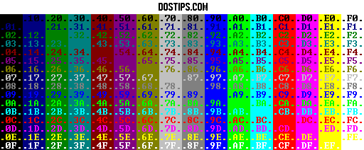

Hello,
I have to write a small script which is checking password and running some program. In a script below I have something like this but during executing this batch file everybody can see this password. Is there a possible simply way to make it invisible during enetrig.
Thanks for help
@echo off & setlocal enableextensions
set /P Password=”Enter password:”
if not %Password% == tor goto :END
start cmd.exe
exit
:END
exit
Regards Maro
[solved] Hide keyboard input in a batch
Moderator: DosItHelp
mar_male,
The best solution dostips came up with so far is to invoke SET /P in a separate command window that uses the difficult to distinguish colors Light Green and Light Aqua for foreground and background.
The password dialog is implemented as :pwd dos function that can easily be called.
Here is a batch expample how to use it:
DOS IT HELP?
The best solution dostips came up with so far is to invoke SET /P in a separate command window that uses the difficult to distinguish colors Light Green and Light Aqua for foreground and background.
The password dialog is implemented as :pwd dos function that can easily be called.
Here is a batch expample how to use it:
@ECHO OFF
call:pwd pass
if "%pass%"=="dostips" (
echo.password accepted
) else (
echo.password denied
)
GOTO:EOF
insert the :pwd function here
http://www.dostips.com/DtCodeCmdLib.php#pwd
DOS IT HELP?
DosItHelp wrote:mar_male,
The best solution dostips came up with so far is to invoke SET /P in a separate command window that uses the difficult to distinguish colors ..
Thanks for fast reply.
Can You write me what is a code color for the background to be the same color as the passwords
I think i have to change "AB" value it into this line :
col set "col=AB"
mar_male,
Unfortunately the color command doesn't accept foreground and background color to be the same. Light Green on Light Aqua is the closest I could find. Try another color if you like:

Unfortunately the color command doesn't accept foreground and background color to be the same. Light Green on Light Aqua is the closest I could find. Try another color if you like:
Possible combinations are:C:\>color /?
Sets the default console foreground and background colors.
COLOR [attr]
attr Specifies color attribute of console output
Color attributes are specified by TWO hex digits -- the first
corresponds to the background; the second the foreground. Each digit
can be any of the following values:0 = Black
...
1 = Blue
2 = Green
3 = Aqua
4 = Red
5 = Purple
6 = Yellow
7 = White
8 = Gray
9 = Light Blue
A = Light Green
B = Light Aqua
C = Light Red
D = Light Purple
E = Light Yellow
F = Bright White
Last edited by DosItHelp on 07 Mar 2008 23:43, edited 1 time in total.
Re: [solved] Hide keyboard input in a batch
the best way to do it is:
1 )open cmd
2 )click on the uper left corner
3 )click properties
4 )check the box "screen text"
5 )you should see various boxes of colors.Click the second wich is dark blue.
6 )on the right you should see a box that says "select color values".Change Red to 0 Green to 0 and Blue to 2
7 )then click ok
8 )write in cmd COLOR 01
you are done
1 )open cmd
2 )click on the uper left corner
3 )click properties
4 )check the box "screen text"
5 )you should see various boxes of colors.Click the second wich is dark blue.
6 )on the right you should see a box that says "select color values".Change Red to 0 Green to 0 and Blue to 2
7 )then click ok
8 )write in cmd COLOR 01
you are done
Re: [solved] Hide keyboard input in a batch
Okay, I made like a hidetext command in C++ in like hive seconds. All it does is set the background and foreground color to black on the current line and one.
hidetext /r is "regular", and that changes the foreground and background of the current line to black. "hidetext /s" is "show", and it jut sets the foreground and background to the default, 07.
I also made "echol" in like 5 seconds. That just echos a string without skipping a line.
http://dl.dropbox.com/u/10434417/releases/hidetext.exe
http://dl.dropbox.com/u/10434417/releases/echol.exe

Code: Select all
@echo off
echol "Enter your password: "
hidetext /r
set /p password=
hidetext /s
echo You typed in %password%!
pausehidetext /r is "regular", and that changes the foreground and background of the current line to black. "hidetext /s" is "show", and it jut sets the foreground and background to the default, 07.
I also made "echol" in like 5 seconds. That just echos a string without skipping a line.
http://dl.dropbox.com/u/10434417/releases/hidetext.exe
http://dl.dropbox.com/u/10434417/releases/echol.exe
Re: [solved] Hide keyboard input in a batch
Code: Select all
@echo off
set RealPwd=Batcher
>"%temp%\in.com" echo hP1X500P[PZBBBfh#b##fXf-V@`$fPf]f3/f1/5++u5x
set /p InputPwd=Enter password: <nul
for /f "tokens=*" %%a in ('"%temp%\in.com"') do (
set "InputPwd=%%a"
)
if "%InputPwd%" equ "%RealPwd%" (
echo Correct password.
) else (
echo Incorrect password.
)
pauseRe: [solved] Hide keyboard input in a batch
Batcher,
your solution doesn't seem to work for Win7 64bit. I get this error:
your solution doesn't seem to work for Win7 64bit. I get this error:
---------------------------
Unsupported 16-Bit Application
---------------------------
The program or feature "\??\C:\Users\Peter\AppData\Local\Temp\in.com" cannot start or run due to incompatibity with 64-bit versions of Windows. Please contact the software vendor to ask if a 64-bit Windows compatible version is available.
---------------------------
OK
---------------------------
Re: [solved] Hide keyboard input in a batch
Sure it would not, 64bit version of Windows have NTVDM emulator removed, and this means no COM files support, as well as any 16bit windows executables.
However this could be bypassed using dosbox to launch 16 bit application, but it would be tricky, since dosbox isnt native system application like ntvdm, and have some sort of isolated sandbox to run any application inside, also dosbox doesnt run in CMD.exe and have its own console window, so im not sure if there is any way to hide it and just get 16 bit app make sdtout.
I wonder, is there any way to write and execture 32 or 64 bit com files with pure opcode without all that Win PE container trash?
However this could be bypassed using dosbox to launch 16 bit application, but it would be tricky, since dosbox isnt native system application like ntvdm, and have some sort of isolated sandbox to run any application inside, also dosbox doesnt run in CMD.exe and have its own console window, so im not sure if there is any way to hide it and just get 16 bit app make sdtout.
I wonder, is there any way to write and execture 32 or 64 bit com files with pure opcode without all that Win PE container trash?
Re: [solved] Hide keyboard input in a batch
Voodooman wrote:Sure it would not, 64bit version of Windows have NTVDM emulator removed, and this means no COM files support, as well as any 16bit windows executables.
However this could be bypassed using dosbox to launch 16 bit application, but it would be tricky, since dosbox isnt native system application like ntvdm, and have some sort of isolated sandbox to run any application inside, also dosbox doesnt run in CMD.exe and have its own console window, so im not sure if there is any way to hide it and just get 16 bit app make sdtout.
I wonder, is there any way to write and execture 32 or 64 bit com files with pure opcode without all that Win PE container trash?
They didn't just remove it. >.>
64bit operating systems can't even run 16bit applications. That's why they removed tools like DEBUG, because they're 16bit.
This is not a Windows thing. Look at Ubuntu 32bit VS Ubuntu 64bit. Ubuntu used to have their own DEBUG command, but it was removed because their 64bit operating system could't run it. I also don't think this could be done with DOSBOX, but I'm not 100% sure.
I made my method in like a few seconds because it works for all Windows (who on DosTips wouldn't be using Windows?) operating systems.
-
Matt Williamson
- Posts: 78
- Joined: 30 Dec 2013 10:16
- Location: United States by the big waterfall
Re: [solved] Hide keyboard input in a batch
I thought I'd update this post. A new way has been discovered to mask a password that is pure batch.
Code by MC ND on StackOverflow
Code by MC ND on StackOverflow
Code: Select all
@echo off
setlocal enableextensions disabledelayedexpansion
rem Call the subroutine to get the password
call :getPassword password
rem Echo what the function returns
if defined password (
echo You have typed [%password%]
) else (
echo You have typed nothing
)
rem End of the process
endlocal
exit /b
rem Subroutine to get the password
:getPassword returnVar
setlocal enableextensions disabledelayedexpansion
set "_password="
rem We need a backspace to handle character removal
for /f %%a in ('"prompt;$H&for %%b in (0) do rem"') do set "BS=%%a"
rem Prompt the user
set /p "=password ?:" <nul
:keyLoop
rem retrieve a keypress
set "key="
for /f "delims=" %%a in ('xcopy /l /w "%~f0" "%~f0" 2^>nul') do if not defined key set "key=%%a"
set "key=%key:~-1%"
rem handle the keypress
rem if No keypress (enter), then exit
rem if backspace, remove character from password and console
rem else add character to password and go ask for next one
if defined key (
if "%key%"=="%BS%" (
if defined _password (
set "_password=%_password:~0,-1%"
setlocal enabledelayedexpansion & set /p "=!BS! !BS!"<nul & endlocal
)
) else (
set "_password=%_password%%key%"
set /p "=*"<nul
)
goto :keyLoop
)
echo(
rem return password to caller
if defined _password ( set "exitCode=0" ) else ( set "exitCode=1" )
endlocal & set "%~1=%_password%" & exit /b %exitCode%Re: [solved] Hide keyboard input in a batch
That's useful - it may be modeled on this one which I had filed away.
Code: Select all
::!CARLOS_HIDE_INPUT.BAT
::Code by Carlos on AMBNT 2013-03-10
::Subject: Getkey without Display the input.
::Thread started by jeb
::Note: My edits/additions are not indented 3 spaces
:::::::::::::BEGIN OF CODE:::::::::::::
@Echo Off
:HInput
::Version 3.0
SetLocal DisableDelayedExpansion
Echo Enter your password below:
Set "Line="
Rem Save 0x08 character in BS variable
For /F %%# In (
'"Prompt;$H&For %%# in (1) Do Rem"'
) Do Set "BS=%%#"
:HILoop
Set "Key="
For /F "delims=" %%# In (
'Xcopy /L /W "%~f0" "%~f0" 2^>Nul'
) Do If Not Defined Key Set "Key=%%#"
Set "Key=%Key:~-1%"
SetLocal EnableDelayedExpansion
If Not Defined Key Goto :HIEnd
If %BS%==^%Key% (Set /P "=%BS% %BS%" <Nul
Set "Key="
If Defined Line Set "Line=!Line:~0,-1!"
) Else Set /P "=*" <Nul
If Not Defined Line (EndLocal &Set "Line=%Key%"
) Else For /F delims^=^ eol^= %%# In (
"!Line!") Do EndLocal &Set "Line=%%#%Key%"
Goto :HILoop
:HIEnd
Echo(
Echo Your password is '!Line!'
Pause
Goto :Eof
::::::::::::::END OF CODE::::::::::::::Re: [solved] Hide keyboard input in a batch
Here is the other recent thread.
viewtopic.php?f=3&t=4664
viewtopic.php?f=3&t=4664